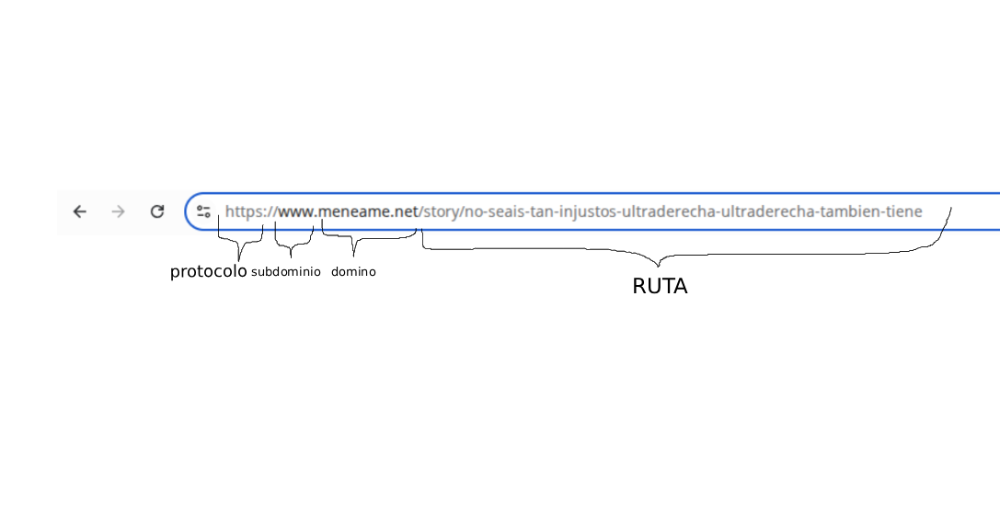
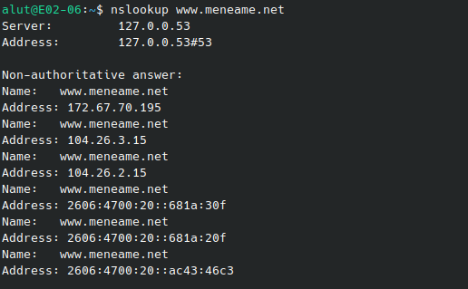
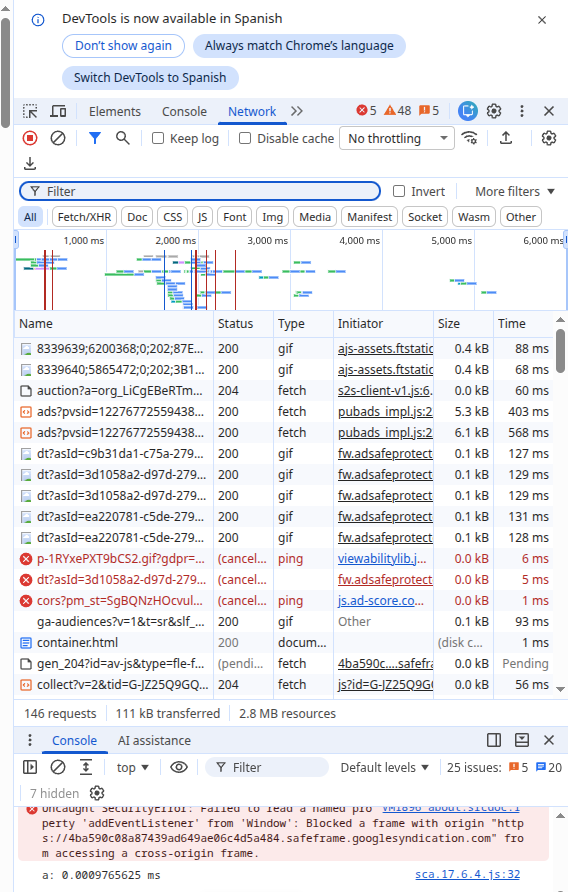
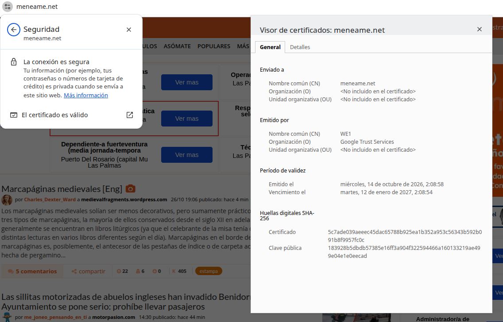
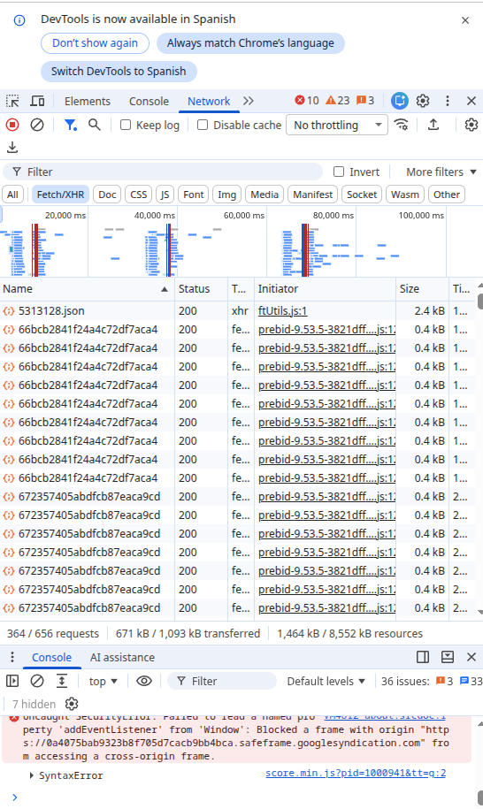

La web que he elegido
He elegido meneame.net porque es uno de los agregadores de noticias y comunidades más conocidos en español y se adapta bien a las distintas funciones dentro del glosario.
Glosario
| Término | Definición con mis palabras | Ejemplo en mi web |
|---|---|---|
| Cliente | Aplicación que solicita información, recursos o servicios a un servidor. (Como un navegador web) | El cliente sería el propio navegador. Al escribir la dirección, actua como cliente pidiendo al servidor los datos de la pagina (La portada con las últimas noticias, por ejemplo.). El navegador recibe los datos, los interpreta y muestra. |
| Servidor | Potente ordenador que se mantiene encendido y conectado a la red, espera peticiones de clientes para procesar y despachar la información que se solicite. | El servidor es la máquina remota donde se aloja la web. En cuanto el cliente pide ver las noticias, el servidor recibe la petición, busca el contenido, procesa las últimas noticias y envía los datos al cliente. |
| Servidor web | Software especifico (Como Apache) instalado en el servidor que se encarga de procesar las peticiones HTTP/HTTPS que hacen los clientes, localiza y envía los archivos que forman una pagina web. | En Menéame, el servidor web es la aplicación que procesa las peticiones del navegador, solicita los ficheros necesarios, y entrega al cliente los archivos HTML y ficheros necesarios para poder ver correctamente la pagina. |
| Apache | Uno de los programas de servidor web HTTP de código abierto más populares e históricos del mundo. Su trabajo es estar "escuchando" en el servidor para recibir las peticiones del navegador, procesar el código de la web y enviarle la respuesta al usuario. | Cuando tú pides ver una portada o abrir los comentarios de una noticia, Apache recibe esa orden en el servidor, ejecuta los scripts de la web (como PHP) para armar la página y te entrega el resultado final a tu navegador. |
| URL | Acronimo de "Uniform Resource Locator". Es la dirección única y específica que se escribe en el navegador para localizar un recurso concreto (una página, una imagen, un archivo) dentro de Internet. Es, básicamente, la "dirección postal" de cualquier cosa en la web. | En una URL de Menéame, como https://meneame.net/go?id=4228333 la URL Le indica al navegador el protocolo (HTTPS://) el dominio del servidor (meneame.net) y la ruta específica (/go) para acceder al recurso deseado. |
| Protocolo | Es un conjunto de reglas y estándares de comunicación que permite que dos o más sistemas o dispositivos en red se entiendan entre sí, definiendo cómo se envían, reciben y estructuran los datos. | El protocolo principal que utiliza el navegador para comunicarse con Menéame es HTTPS. Gracias a este protocolo, tu cliente y el servidor de Menéame "hablan el mismo idioma" de forma segura y cifrada, garantizando que cuando envías tu usuario y contraseña o votas una noticia, los datos viajen de forma ordenada y protegida. |
| Dominio | Es el nombre único y fácil de recordar que se le asigna a una dirección IP en Internet para que las personas no tengan que memorizar secuencias numéricas complejas a la hora de entrar a un sitio web. | El dominio es meneame.net. Ahorrandote el escribir la dirección IP exacta donde se aloja la página. |
| Ruta | Una ruta es la parte de la URL que sigue al dominio, esta indica la ubicación exacta de un archivo dentro de la estructura del sistema de navegación del sitio web. | En la URL https://meneame.net/go?id=4228333, la ruta es /go. Que redirecciona a una pagina fuera de Menéame. |
| Dirección IP | Acrónimo de "Internet Protocol". Es una etiqueta númerica unica que identifica a un dispositivo en una red. | El servidor donde está montado Menéame tiene asignada una dirección IP pública fija. |
| DNS | Acrónimo de "Domain Name System". Es el sistema encargado de traducir nombres de dominios legibles a direcciones IP numéricas para que los ordenadores la entiendan y puedan conectarse. | Cuando se escribe "meneame.net" en el navegador. El DNS traduce el nombre del dominio a la dirección IP correspondiente. |
| HTTP | Acrónimo de "Hypertext Transfer Protocol". Es el protocolo de comunicación básico que permite la transferencia de información en la web. Es el lenguaje estándar utilizado por los clientes y servidores para pedir y enviar paginas web sin cifrar datos. | HTTP es el mecanismo fundamental en el que se estructuran las peticiones de Menéame. Cuando el navegador solicita ver una noticia de Menéame, envía un mensaje del tipo GET. El servidor de Menéame lee el mensaje redactado en formato HTTP y le responde con el código del contenido. |
| HTTPS | Acrónimo de "Hypertext Transfer Protocol Secure". Es una versión segura del protocolo HTTP que utiliza cifrado para proteger la información transmitida entre el cliente y el servidor. | HTTPS es el protocolo utilizado por Menéame para proteger la información sensible de los usuarios, como sus datos personales y credenciales de acceso. |
| Puerto | Punto de acceso virtual o canal lógico identificado por un número (del 0 al 65535) dentro de un dispositivo en red. Sirve para que el sistema operativo sepa a qué programa o servicio concreto debe dirigir la información que llega a través de una dirección IP. | El servidor de Menéame utiliza principalmente el puerto 80 Para atender las peticiones HTTP. Y el puerto 443 para atender las peticiones HTTPS. |
| Petición | Mensaje o solicitud que un cilente envía al servidor web para pedir un recurso concreto. | Cuando entras a meneame.net y haces clic en el botón "Menéalo" de cualquier noticia, el navegador genera una petición HTTP dirigida al servidor de Menéame. En esa petición el cliente pide al servidor que se registre su voto y que se devuélva el contador actualizado. |
| Respuesta | Es el mensaje que el servidor web envía al cliente en respuesta a una petición. Contiene un código de estado y el contenido solicitado. | Despues de que el cliente envía una petición, el servidor de Menéame genera una respuesta HTTP que incluye el código de estado 200 OK junto con todo el contenido solicitado. El navegador lee esa respuesta y la transforma visualmente a lo que se ve en pantalla. |
| Código de estado | Es un número de tres dígitos que indica el resultado de la petición. Indica rapidamente si todo ha ido bien, si se debe redireccionar o ha ocurrido un error. | Dependiendo de lo que ocurra cuando pidas un recurso, el servidor te devolverá un código diferente. 200 OK si todo carga perfectamente. 301 Al usar un enlace con la ruta /go, ya que el servidor te redirigirá a la nueva ubicación. y 404 si el recurso no se encuentra ya que no existe o fue eliminado. |
| Web estática | Es un sitio web cuyos contenidos se muestran exactamente igual a todos los usuarios que lo visitan. Los archivos (HTML, CSS, imágenes) están previamente creados y guardados en el servidor, por lo que este solo tiene que enviarlos directamente al navegador sin procesar datos ni consultar bases de datos. | Aunque Menéame es una web dinámica por el flujo constante de votos y noticias, contiene elementos estáticos como su página de aviso legal o la política de cookies. |
| Web dinámica | Es un sitio web cuyo contenido cambia según las acciones del usuario o la información que se obtiene de una base de datos. | Menéame es una web dinámica porque muestra información actualizada en tiempo real, como los votos de los usuarios y las noticias más populares. |
| PHP | Lenguaje de programación de código abierto que se utiliza en el lado del servidor para crea páginas web dinamicas, procesar datos de formularios, comunicarse con bases de datos y generar código HTML que se envía al navegador del usuario. | Menéame está programado principalmente en PHP. Al entrar en la portada, el script de PHP del servidor consulta la base de datos, calcula cuáles son las noticias más votadas y construye el código HTML de la página antes de enviártelo. |
| Base de datos | Sistema organizado de almacenamiento que permite guardar, estructurar, consultar y gestionar grandes cantidades de datos de forma rápida y eficiente desde una aplicación o servidor web. | Menéame utiliza una base de datos para guardar toda la información del sitio, ya sea cuentas, usuarios, contraseñas, texto, titulos o enlaces. |
| LAMP | Conjunto de software de código abierto que combina cuatro tecnologías fundamentales para montar y ejecutar servidores web dinámicos. Conformado por Linux, Apache, MySQL y PHP. | Menéame se diseñó, como muchisimas páginas, para funcioanr sobre una pila de tecnologías del tipo LAMP. Linux gestiona el hardware del servidor. Apache atiende peticiones. MySQL almacena usuarios, comentarios y votos y PHP une todo procesando la lógica de la web y genera el HTML. |
| JSON | Formato ligero de intercambio de datos estructurado en texto plano que utiliza pares de "clave-valor" (como "nombre": "Fulano"). Es muy fácil de leer para los humanos y muy rápido de procesar. | Menéame utiliza datos en formato JSON para actualizar elementos de la página sin necesidad de recargarla entera (mediante llamadas de fondo/API). Cuando pulsas en "Menear", el servidor devuelve una respuesta en formato JSON |
| XML | Es un lenguaje de marcado que permite definir y estructurar datos utilizando etiquetas personalizadas. XML está diseñado exclusivamente para transportar y almacenar datos de forma estructurada y legible tanto por humanos como por sistemas informáticos. | Menéame utiliza XML para generar sus canales RSS o fuentes de sindicación. Cuando un usuario o un lector de noticias externo quiere seguir las últimas publicaciones de Menéame sin entrar a la web, solicita el feed RSS. El servidor responde con un archivo en formato XML que estructura las noticias recientes utilizando etiquetas claras |
Evidencias




